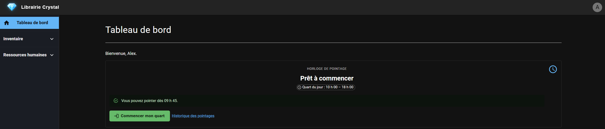
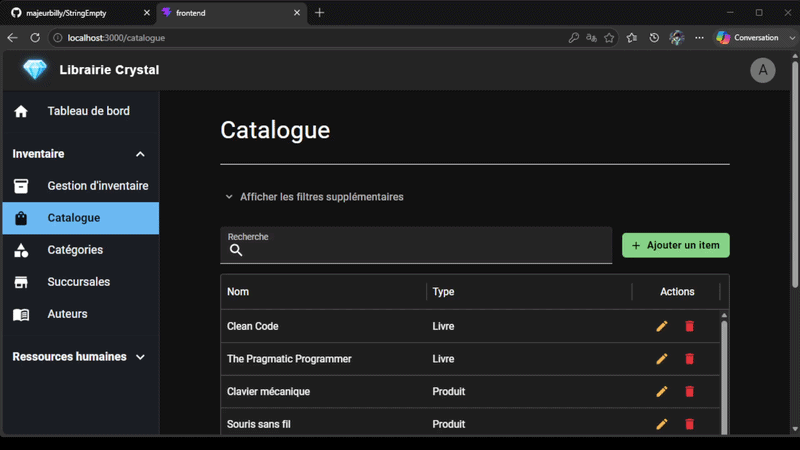
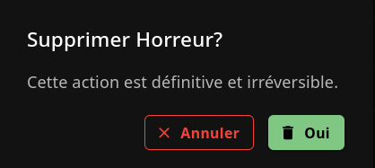
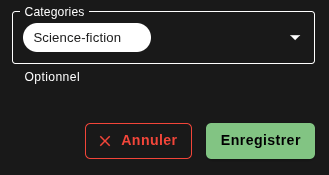

ERP Crystal
Revue du Sprint 2
Antony Burlet
Billy Hallé
William Peck
Nicolas Michaud
Nicolas Michaud
Optimisation de la base du projet
La seconde itération a commencé par une réorganisation du projet. Nous avons corrigé plusieurs problèmes mineurs, renommé certaines parties du code et amélioré sa structure afin de faciliter son évolution pour les prochaines étapes.
📈 Amélioration de notre méthode de travail
Au-delà des fonctionnalités développées, nous avons revu notre façon de collaborer afin d'améliorer la qualité du développement et la rapidité d'exécution pour les prochains sprints.
User Stories
Pull Requests
Répartition des tâches
Ces changements permettront une meilleure qualité du code et une collaboration plus efficace pour les prochaines itérations.
🚀 Pipeline Azure DevOps
Nous avons également mis en place un pipeline d'intégration continue sur Azure DevOps. Celui-ci compile automatiquement le projet et exécute les tests à chaque modification.


🎨 Développement du Frontend
Nous avons développé la structure principale de l'application afin d'offrir une interface moderne et cohérente.

⚡ Expérience utilisateur
Afin d'améliorer l'expérience utilisateur, un indicateur de chargement (spinner) a été ajouté lors des appels asynchrones.

📦 Gestion des items
Nous avons développé le module de gestion des items, autant du côté backend que frontend, afin de permettre leur administration complète.

👥 Gestion des utilisateurs
Nous avons développé les premières fonctionnalités du module Ressources humaines avec la gestion complète des utilisateurs.

Conclusion
Cette deuxième itération a marqué une étape importante dans le développement de notre ERP. Nous avons réussi à connecter le backend et le frontend, tout en développant les premières fonctionnalités essentielles de l'application.